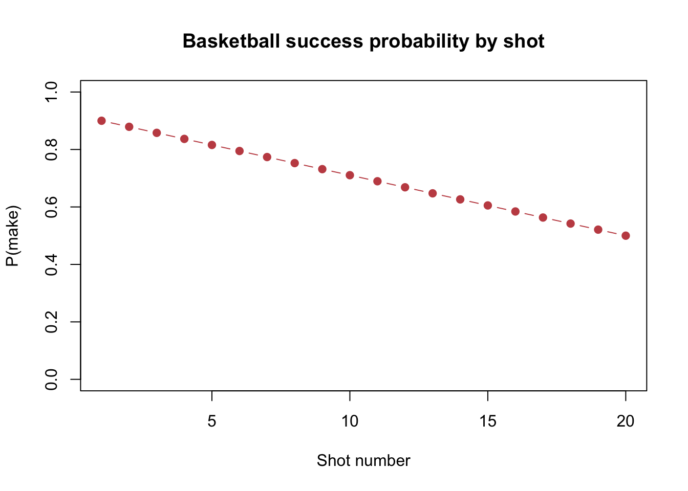

Does a normal approximation emerge similarly when observations remain independent but are not identically distributed?
2 Population / Process and Theory
For each candidate n, probabilities p_i are evenly spaced from 0.90 to 0.50, and X_i ~ Bernoulli(p_i) independently. The theoretical mean of the average is (1/n) * sum(p_i). The variance is sum(p_i * (1 - p_i)) / n^2, not an iid Binomial calculation.
3 CLT Assumptions and Prediction
Independence and finite variance hold, while identical distribution does not. Since the probabilities vary smoothly and stay away from 0 and 1, a normal approximation may be reasonable, but the relevant mean and variance change with candidate n.
4 Probability Curve
Code
probabilities <-nonidentical_probabilities(20L)plot(seq_along(probabilities), probabilities, type ="b", pch =19,col ="#C44E52", ylim =c(0, 1), xlab ="Shot number",ylab ="P(make)", main ="Basketball success probability by shot")

5 Simulation Design and Evidence
Each simulated sample calls rbinom(n, size = 1, prob = p) with its own probability vector. The displayed diagnostics use the correct p_i-specific theoretical SE.
theoretical/reference SE: 0.014 Evidence decision: The correct p_i-specific variance is used; n = 1,000 is the first tested value with the strongest numerical and visual evidence, though convergence is slower than the iid benchmark.
The selected value uses Var(Xbar) = sum(p_i * (1 - p_i)) / n^2; replacing the changing probabilities by one iid Bernoulli variance would answer a different problem. The n = 1,000 row is numerically stable against the alternate seed, although convergence is slower than for the bounded iid die.
Source Code
---title: "07 · Extra Credit: Non-Identical Bernoulli Shots"subtitle: "Independent shots with probabilities that change from 0.90 to 0.50"---```{r}root <-if (file.exists("R/config.R")) "."else".."source(file.path(root, "R/config.R")); source(file.path(root, "R/distributions.R"))source(file.path(root, "R/diagnostics.R")); source(file.path(root, "R/simulate_means.R"))source(file.path(root, "R/plotting.R")); source(file.path(root, "R/report_helpers.R"))spec <-population_spec("nonidentical_bernoulli"); rows <-population_rows(spec$id)```## Research QuestionDoes a normal approximation emerge similarly when observations remain independent but are not identically distributed?## Population / Process and TheoryFor each candidate `n`, probabilities `p_i` are evenly spaced from 0.90 to 0.50, and `X_i ~ Bernoulli(p_i)` independently. The theoretical mean of the average is `(1/n) * sum(p_i)`. The variance is `sum(p_i * (1 - p_i)) / n^2`, not an iid Binomial calculation.## CLT Assumptions and PredictionIndependence and finite variance hold, while identical distribution does not. Since the probabilities vary smoothly and stay away from 0 and 1, a normal approximation may be reasonable, but the relevant mean and variance change with candidate `n`.## Probability Curve```{r}probabilities <-nonidentical_probabilities(20L)plot(seq_along(probabilities), probabilities, type ="b", pch =19,col ="#C44E52", ylim =c(0, 1), xlab ="Shot number",ylab ="P(make)", main ="Basketball success probability by shot")```## Simulation Design and EvidenceEach simulated sample calls `rbinom(n, size = 1, prob = p)` with its own probability vector. The displayed diagnostics use the correct `p_i`-specific theoretical SE.```{r}if (is.null(rows) ||nrow(rows) ==0L) {plot.new(); text(0.5, 0.5, "Run scripts/run_project.R after entering student_seed.")} else { display_n <-max(rows$n); means_path <-file.path(root, "results", "sample_means", paste0(spec$id, "_n_", display_n, ".rds"))if (file.exists(means_path)) { means <-readRDS(means_path); old_par <-par(mfrow =c(1, 2)); theory <-nonidentical_bernoulli_theory(display_n)plot_sampling_histogram(means, display_n, spec$label, theory$mean, theory$sd)plot_sampling_qq(means, display_n, spec$label); par(old_par) }print(rows)}```## Final Selected N and Interpretation```{r, results='asis'}report_selection(spec$id)```The selected value uses `Var(Xbar) = sum(p_i * (1 - p_i)) / n^2`; replacing the changing probabilities by one iid Bernoulli variance would answer a different problem. The `n = 1,000` row is numerically stable against the alternate seed, although convergence is slower than for the bounded iid die.